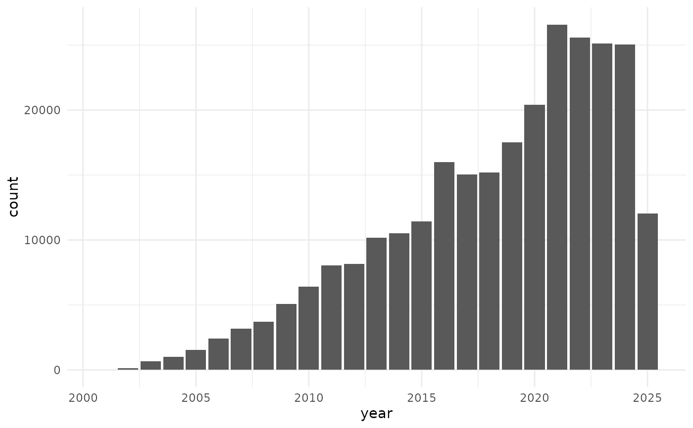

Omicidx DuckDB Client (R6)
Omicidx DuckDB Client (R6)
Details
This is the main class for interacting with the OmicIDX data resource.
It provides methods for connecting to the Omicidx DuckDB database,
listing tables, retrieving dplyr table references,
and executing SQL queries.
The OmicidxClient class uses R6 to encapsulate
the functionality for connecting to and querying the Omicidx
DuckDB database. It provides a user-friendly interface for
accessing the data stored in the database.
A typical workflow will involve:
Creating a new OmicidxClient object using the
new()method.Listing available tables using the
list_tables()method.Accessing specific tables using the
tbl()method or by referencing tables in thetblsfield.
If you need to execute custom SQL queries, you can use the query()
method.
The underlying DuckDB database is actually stored on an S3-compatible object store, but the client abstracts away the details of connecting to the database. The database does not need to be downloaded locally; the data are also stored in the cloud and queried remotely via DuckDB.
If you want to persist the DuckDB instance locally (e.g., to cache query results), you can provide a local file path when creating the OmicidxClient object.
Public fields
conA DuckDB connection object.
tblsA named list of lazy
dplyrtable references. Populated during initialization.
Methods
Method list_tables()
List tables in the Omicidx database.
Method table_names()
Get fully qualified table names as a named character vector.
Method tbl()
Get a dplyr table reference for a specific table.
Method query()
Execute an arbitrary SQL query (as a string) against the database.
Arguments
sqlcharacter(1) A SQL string to execute via
DBI::dbGetQuery().
Method execute()
Execute a SQL command against the database.
Arguments
sqlcharacter(1) A SQL string to execute via
DBI::dbExecute().
Examples
oidx <- OmicidxClient$new()
oidx$list_tables()
#> # A tibble: 8 × 6
#> database schema name column_names column_types temporary
#> <chr> <chr> <chr> <list> <list> <lgl>
#> 1 omicidx sources v_src_geo_platforms <chr [20]> <chr [20]> FALSE
#> 2 omicidx sources v_src_geo_samples <chr [26]> <chr [26]> FALSE
#> 3 omicidx sources v_src_geo_series <chr [26]> <chr [26]> FALSE
#> 4 omicidx sources v_src_sra_accessions <chr [21]> <chr [21]> FALSE
#> 5 omicidx sources v_src_sra_experiments <chr [28]> <chr [28]> FALSE
#> 6 omicidx sources v_src_sra_runs <chr [17]> <chr [17]> FALSE
#> 7 omicidx sources v_src_sra_samples <chr [13]> <chr [13]> FALSE
#> 8 omicidx sources v_src_sra_studies <chr [17]> <chr [17]> FALSE
# tbl_ref <- oidx$tbl("some_table")
# oidx$query("SELECT * FROM some_table LIMIT 5")
# Get all table names
oidx$table_names()
#> sources.v_src_geo_platforms sources.v_src_geo_samples
#> "sources.v_src_geo_platforms" "sources.v_src_geo_samples"
#> sources.v_src_geo_series sources.v_src_sra_accessions
#> "sources.v_src_geo_series" "sources.v_src_sra_accessions"
#> sources.v_src_sra_experiments sources.v_src_sra_runs
#> "sources.v_src_sra_experiments" "sources.v_src_sra_runs"
#> sources.v_src_sra_samples sources.v_src_sra_studies
#> "sources.v_src_sra_samples" "sources.v_src_sra_studies"
# Get a description of a specific table
# This is the table "schema"
oidx$describe_table("sources.v_src_sra_studies")
#> column_name column_type null
#> 1 accession VARCHAR YES
#> 2 study_accession VARCHAR YES
#> 3 alias VARCHAR YES
#> 4 title VARCHAR YES
#> 5 description VARCHAR YES
#> 6 abstract VARCHAR YES
#> 7 study_type VARCHAR YES
#> 8 center_name VARCHAR YES
#> 9 broker_name VARCHAR YES
#> 10 BioProject VARCHAR YES
#> 11 GEO VARCHAR YES
#> 12 identifiers STRUCT(namespace VARCHAR, id VARCHAR, uuid VARCHAR)[] YES
#> 13 attributes STRUCT(tag VARCHAR, "value" VARCHAR)[] YES
#> 14 xrefs STRUCT(db VARCHAR, id VARCHAR)[] YES
#> 15 pubmed_ids VARCHAR[] YES
#> 16 date DATE YES
#> 17 stage VARCHAR YES
#> key default extra
#> 1 <NA> <NA> <NA>
#> 2 <NA> <NA> <NA>
#> 3 <NA> <NA> <NA>
#> 4 <NA> <NA> <NA>
#> 5 <NA> <NA> <NA>
#> 6 <NA> <NA> <NA>
#> 7 <NA> <NA> <NA>
#> 8 <NA> <NA> <NA>
#> 9 <NA> <NA> <NA>
#> 10 <NA> <NA> <NA>
#> 11 <NA> <NA> <NA>
#> 12 <NA> <NA> <NA>
#> 13 <NA> <NA> <NA>
#> 14 <NA> <NA> <NA>
#> 15 <NA> <NA> <NA>
#> 16 <NA> <NA> <NA>
#> 17 <NA> <NA> <NA>
# create a table of SRA runs published per year
geo_studies_by_year <- oidx$tbls$sources.v_src_geo_series |>
dplyr::mutate(year = dplyr::sql("EXTRACT(YEAR FROM submission_date)")) |>
dplyr::group_by(year) |>
dplyr::summarise(count = dplyr::n())
# The result is a lazy dplyr table
geo_studies_by_year
#> # Source: SQL [?? x 2]
#> # Database: DuckDB 1.4.3 [unknown@Linux 6.11.0-1018-azure:R 4.5.2/:memory:]
#> year count
#> <dbl> <dbl>
#> 1 2001 14
#> 2 2002 124
#> 3 2003 671
#> 4 2004 986
#> 5 2005 1534
#> 6 2006 2391
#> 7 2007 3172
#> 8 2008 3706
#> 9 2009 5067
#> 10 2010 6400
#> # ℹ more rows
# use it just like any other dplyr table
if (requireNamespace("ggplot2", quietly = TRUE)) {
geo_studies_by_year |>
ggplot2::ggplot(ggplot2::aes(x = year, y = count)) +
ggplot2::geom_bar(stat="identity") +
ggplot2::theme_minimal()
}

# or get the data as a data frame
geo_studies_by_year_df <- geo_studies_by_year |> dplyr::collect()
head(geo_studies_by_year_df)
#> # A tibble: 6 × 2
#> year count
#> <dbl> <dbl>
#> 1 2001 14
#> 2 2002 124
#> 3 2003 671
#> 4 2004 986
#> 5 2005 1534
#> 6 2006 2391